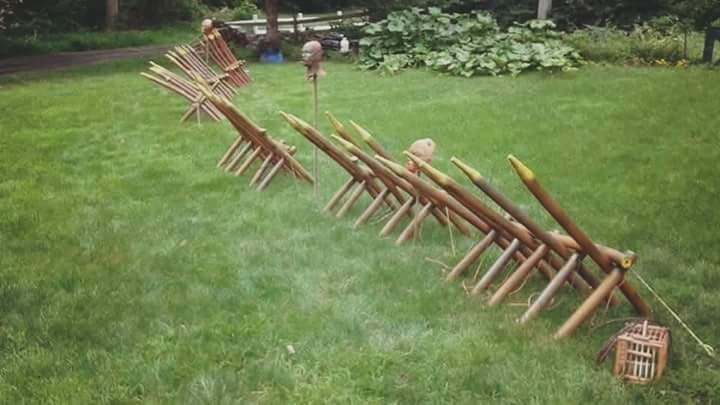

If you drive a 5 - 6 foot branch in the ground at about 45 degrees on the outside of the fence (similar to the picture below, but driven into the ground and in front of a fence), it will provide additional protection from animals that are a little too curious about your campsite. Yaupon holly trunks would be ideal for this task.
